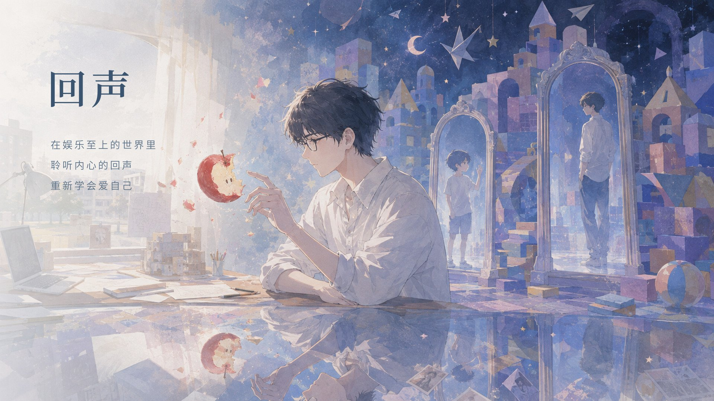
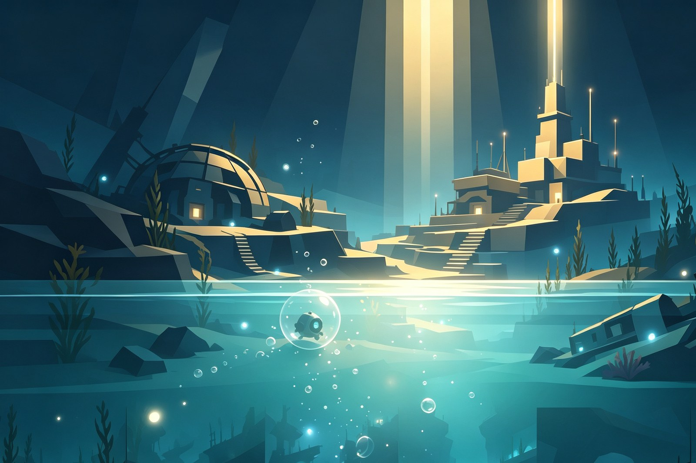
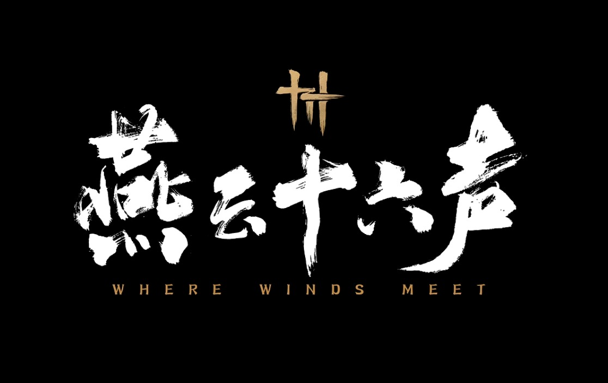

游戏 DemoECHO（回声）
一款治愈系 2D 叙事解谜游戏，采用 Godot 4.6 引擎开发，已完成可玩 Demo（Windows / macOS 双平台）、宣传 PV 与 KV 主视觉。核心体验围绕"双时空压力转化循环"展开，通过 AI NPC 系统、双线叙事（现实/梦境）和独特的"回声"机制，为玩家提供情感治愈的体验。重点展示 NPC 人设演进系统与 AI 对话架构设计。

游戏 Demo一款治愈系 2D 叙事解谜游戏，采用 Godot 4.6 引擎开发，已完成可玩 Demo（Windows / macOS 双平台）、宣传 PV 与 KV 主视觉。核心体验围绕"双时空压力转化循环"展开，通过 AI NPC 系统、双线叙事（现实/梦境）和独特的"回声"机制，为玩家提供情感治愈的体验。重点展示 NPC 人设演进系统与 AI 对话架构设计。

游戏 Demo基于刘慈欣短篇小说《山》改编的 3D 探索解谜游戏，Unreal Engine 5.8 开发。玩家扮演封装着硅基科学家波塞冬博士意识碎片的微型机器人「泡灵」，在深海废墟中苏醒，通过体型控制、意识分裂解谜与光点收集，把文明的火种传回地心。我担任主策划 / 项目负责人，负责项目管理、策划案与叙事、UE 工程搭建与场景后处理。重点展示世界观建构、机制三段式教学设计与关卡空间图纸。
48 小时 GGJ 翌光计划作品（THEME: GROW）。极简手感的 2D 横板跳跃 × 叙事游戏，只有移动与单段跳跃、一击即死、触碰灯笼秒级重生；以四季章节承载武汉的城市记忆——过早的米酒、过江的轮渡、封城的樱花、东湖的日出。已完成在线试玩、实机演示与程序化 Web Audio 音乐。

游戏拆解案全面拆解网易开放世界武侠游戏《燕云十六声》的设计方法论。按剧情叙事、任务设计、关卡设计、玩法机制四大板块逐层分析：从燕云十六州的历史母题与"世界即叙事"，到任务按循环层级的七类划分，再到官方"反大而空"的关卡理念与「无明春山」案例，最后列出 8 项可与 AI 融合的设计机会点。
全面剖析任天堂社交模拟游戏《Tomodachi Life》的 NPC 系统与 AI 玩法设计。涵盖 Mii 创建系统、16 种人格类型、8 阶段关系系统、三层 AI 架构、梦想系统、整活生态等内容，并与《模拟人生4》进行多维度对比分析。
深度体验并分析过多款不同类型游戏，从中学习游戏设计理念与玩家体验。以下是部分游戏经历：